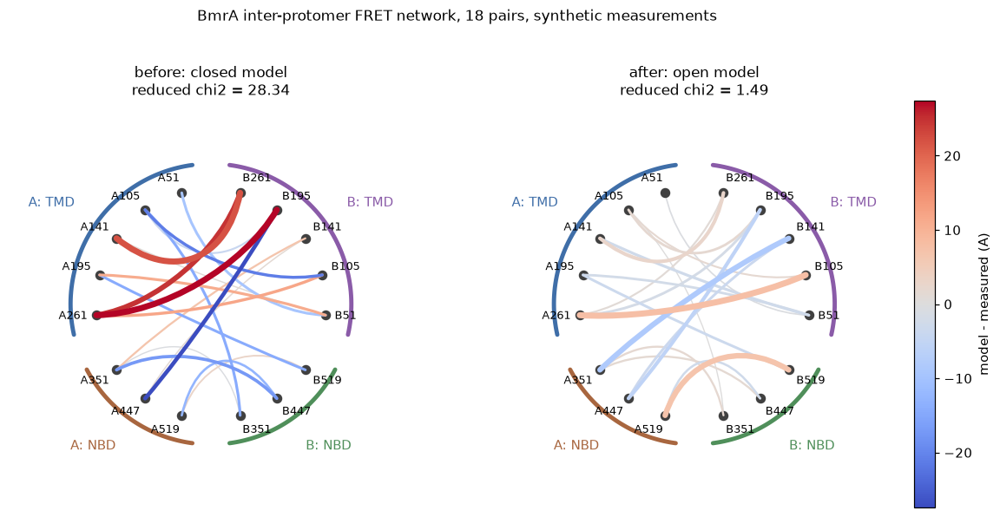
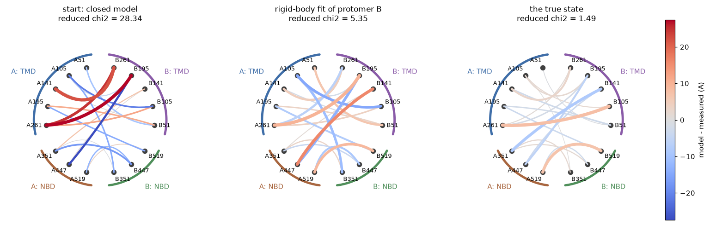
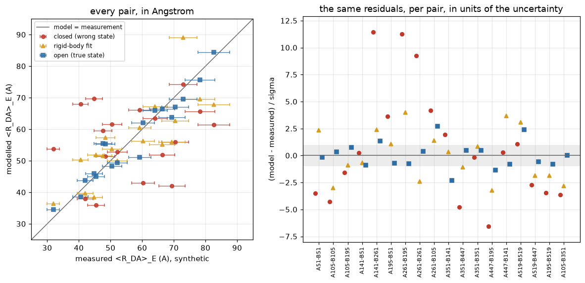

Reading a FRET network as a picture¶
A single FRET measurement is one distance between two labelled positions. A network is many of them on the same molecule: ten, twenty, sometimes a hundred pairs of sites, each with its own donor, its own acceptor, its own uncertainty. The network is what turns FRET from a ruler into a structural method, because no single distance pins a structure and twenty of them, spread over the molecule, can.
The problem is reading one. A network of eighteen pairs is a table of eighteen rows of measured distance, modelled distance, difference and uncertainty. A table is fine for looking up one number and useless for the question you actually have, which is where the model and the measurements disagree. Is the disagreement everywhere, which means the model is simply the wrong state? Is it in one domain, which means that domain is placed wrong? Is it on the chords that touch one particular site, which usually means that site’s label is behaving badly and the model is innocent?
The circle plot answers that question by putting geometry back into the picture:
every labelled site is a point on the rim, ordered so that sites that belong together sit together – here, by protomer and by domain;
every measured pair is a chord between its two sites;
the colour of the chord is the signed deviation, modelled minus measured, in Angstrom: red where the model is too long, blue where it is too short, pale where it agrees;
the thickness of the chord is the same deviation measured in standard deviations of the experiment – how significant the disagreement is, not how large it is in Angstrom.
Colour and thickness deliberately carry different things. A 10 A miss on a pair measured to +-15 A is pale-ish and thin; a 4 A miss on a pair measured to +-1 A is pale and thick. The eye picks out the thick chords, which are the ones worth arguing about.
What this notebook does: build an eighteen-pair network on the ABC transporter BmrA, invent a set of measurements from one of its two known conformations, score the other conformation against them, and then look at the same numbers three ways – as a table, as a circle, and as a scatter.
Setup¶
workshop.py next to this notebook holds the pieces every notebook in this series shares: fetching and trimming the two BmrA structures, the accessible volume call with the dye geometries filled in, and the circle plot itself. The structures are cached in _data/, so this runs offline after the first time.
[1]:
%matplotlib inline
import sys, pathlib, time
sys.path.insert(0, str(pathlib.Path.cwd()))
import numpy as np
import matplotlib.pyplot as plt
from scipy.optimize import minimize
from scipy.spatial import cKDTree
import workshop as ws
plt.rcParams.update({"figure.dpi": 110, "savefig.bbox": "tight",
"axes.grid": True, "grid.alpha": 0.3})
t_start = time.time()
closed_pdb = ws.single_dimer("closed") # 6R72, outward facing, NBDs together
open_pdb = ws.single_dimer("open") # 8QOE, inward facing, NBDs apart
print("closed:", closed_pdb.name, "--", ws.STATES["closed"]["note"])
print("open: ", open_pdb.name, "--", ws.STATES["open"]["note"])
print("Forster radius of the Alexa488/Alexa647 pair, R0 =", ws.R0, "A")
closed: BmrA_closed.pdb -- outward-facing, E504A, ATP/Mg (X-ray)
open: BmrA_open.pdb -- inward-facing (cryo-EM)
Forster radius of the Alexa488/Alexa647 pair, R0 = 52.0 A
The network¶
BmrA is a homodimer, and each protomer is one transmembrane domain (TMD, here residues below 330) welded to one nucleotide-binding domain (NBD, above 330). The two protomers close their NBDs against each other to hydrolyse ATP and open them again to take up substrate. That is the motion a FRET network is being asked to see, so every pair below is inter-protomer: donor on chain A, acceptor on chain B. An intra-protomer pair would mostly report on the part that does not move.
Eight positions are used per protomer, five in the TMD and three in the NBD. They were chosen by scanning the sequence for positions where the dye actually has somewhere to go in both structures – a buried position gives an empty accessible volume and therefore no distance at all, not a distance of zero – and then keeping the pairs whose distance lands in the range a Alexa488/Alexa647 experiment can measure, roughly 30 to 85 A for an R0 of 52 A.
[2]:
# (donor site on chain A, acceptor site on chain B)
PAIRS = [
(("A", 51), ("B", 51)), (("A", 105), ("B", 105)), (("A", 105), ("B", 195)),
(("A", 141), ("B", 51)), (("A", 141), ("B", 261)), (("A", 195), ("B", 51)),
(("A", 261), ("B", 195)), (("A", 261), ("B", 261)), (("A", 261), ("B", 105)),
(("A", 351), ("B", 141)), (("A", 351), ("B", 447)), (("A", 351), ("B", 351)),
(("A", 447), ("B", 195)), (("A", 447), ("B", 141)), (("A", 519), ("B", 519)),
(("A", 519), ("B", 447)), (("A", 195), ("B", 519)), (("A", 105), ("B", 351)),
]
NBD_FROM = 330 # residues at or above this number are in the NBD
DONOR, ACCEPTOR = "Alexa488", "Alexa647"
def label(site):
return f"{site[0]}{site[1]}"
def domain(site):
return "NBD" if site[1] >= NBD_FROM else "TMD"
SITES = []
for a, b in PAIRS:
for s in (a, b):
if s not in SITES:
SITES.append(s)
SITES.sort(key=lambda s: (s[0], s[1]))
print(f"{len(PAIRS)} pairs over {len(SITES)} sites")
for chain in ("A", "B"):
for dom in ("TMD", "NBD"):
members = [label(s) for s in SITES if s[0] == chain and domain(s) == dom]
print(f" chain {chain} {dom}: {', '.join(members)}")
18 pairs over 16 sites
chain A TMD: A51, A105, A141, A195, A261
chain A NBD: A351, A447, A519
chain B TMD: B51, B105, B141, B195, B261
chain B NBD: B351, B447, B519
The modelled distances¶
For every site the accessible volume of its dye is computed on the structure, and for every pair the two volumes are reduced to one number. That number is <R_DA>_E, the distance that reproduces the mean transfer efficiency of the pair. It is not the mean of the distance distribution: for two broad volumes the two differ by several Angstrom, and <R_DA>_E is what an efficiency measurement actually reports.
[3]:
def volumes(pdb_path):
"The accessible volume of every site in the network, on one structure."
out = {}
for site in SITES:
dye = DONOR if site[0] == "A" else ACCEPTOR
out[site] = ws.av(pdb_path, site[0], site[1], dye=dye)
return out
t0 = time.time()
AV = {"closed": volumes(closed_pdb), "open": volumes(open_pdb)}
print(f"{2 * len(SITES)} accessible volumes in {time.time() - t0:.1f} s")
def network(av_of_state):
return {p: ws.rda_e(av_of_state[p[0]], av_of_state[p[1]]) for p in PAIRS}
d_closed = network(AV["closed"])
d_open = network(AV["open"])
32 accessible volumes in 0.5 s
The table, so you can see the problem¶
Here is the whole network as numbers. Both columns are modelled: what the closed structure predicts and what the open structure predicts, for the same eighteen pairs.
Look at it for a moment and try to answer: which part of the molecule moves between the two states, and which pairs would tell the two apart? The answer is in the table. Extracting it by eye takes a minute or two of careful reading, and this is a small network measured without error.
[4]:
print(f"{'pair':>14} {'closed':>8} {'open':>8} {'open-closed':>12}")
print("-" * 48)
for p in PAIRS:
name = f"{label(p[0])}-{label(p[1])}"
print(f"{name:>14} {d_closed[p]:8.1f} {d_open[p]:8.1f} {d_open[p]-d_closed[p]:+12.1f}")
pair closed open open-closed
------------------------------------------------
A51-B51 35.9 45.0 +9.1
A105-B105 61.4 84.3 +22.9
A105-B195 38.0 43.8 +5.8
A141-B51 52.8 49.3 -3.5
A141-B261 53.8 34.5 -19.3
A195-B51 61.5 48.3 -13.2
A261-B195 67.9 38.6 -29.3
A261-B261 69.6 45.9 -23.8
A261-B105 59.6 55.4 -4.2
A351-B141 66.1 51.0 -15.0
A351-B447 43.0 62.0 +19.0
A351-B351 63.4 65.9 +2.4
A447-B195 42.0 63.7 +21.7
A447-B141 74.3 69.5 -4.8
A519-B519 51.4 55.3 +3.9
A519-B447 65.6 75.6 +10.1
A195-B519 55.9 67.1 +11.2
A105-B351 51.9 66.4 +14.5
The measurements are synthetic¶
Everything called “measured” below is invented. There is no BmrA FRET data set in this notebook. The measurements are the open-state modelled distances with 6 per cent Gaussian noise added, and the quoted uncertainty is 6 per cent of the measured value.
That is a deliberate choice, and it is worth being explicit about what it buys and what it hides.
What it buys: a ground truth. Because the measurements were generated from the open state, we know exactly which structure should fit and by how much, so the figures below can be checked rather than believed. With real data you never get that, and a notebook that teaches you to read a figure had better let you check that you read it right.
What it hides: every systematic error a real network has. Six per cent Gaussian noise on <R_DA>_E is roughly the scatter a careful ensemble or single-molecule experiment reaches on a well-behaved pair, but real networks also carry dyes that stick to the surface, sites whose labelling changes the fold, uncertain Forster radii, and conformational mixtures that no single structure can satisfy. None of that is in here. The last section says what those failures look like in this figure, which is
the part of the lesson the synthetic data cannot demonstrate.
[5]:
NOISE = 0.06 # relative, on <R_DA>_E
rng = np.random.default_rng(20240917) # fixed, so the notebook repeats
measured = {p: d_open[p] * (1.0 + NOISE * rng.standard_normal()) for p in PAIRS}
sigma = {p: NOISE * measured[p] for p in PAIRS}
def chi2_red(model):
"Reduced chi-squared of a set of modelled distances against the network."
terms = [((model[p] - measured[p]) / sigma[p]) ** 2 for p in PAIRS]
return float(np.sum(terms) / len(PAIRS))
def deviation(model):
"model - measured, in Angstrom."
return {p: model[p] - measured[p] for p in PAIRS}
def significance(model):
"|model - measured| in units of the experimental uncertainty."
return {p: abs(model[p] - measured[p]) / sigma[p] for p in PAIRS}
print(f"{'pair':>14} {'measured':>10} {'+-':>5} {'E':>5}")
print("-" * 42)
for p in PAIRS:
name = f"{label(p[0])}-{label(p[1])}"
print(f"{name:>14} {measured[p]:10.1f} {sigma[p]:5.1f} {ws.efficiency(measured[p]):5.2f}")
pair measured +- E
------------------------------------------
A51-B51 45.4 2.7 0.69
A105-B105 82.6 5.0 0.06
A105-B195 41.9 2.5 0.78
A141-B51 52.1 3.1 0.50
A141-B261 31.9 1.9 0.95
A195-B51 50.5 3.0 0.54
A261-B195 40.5 2.4 0.82
A261-B261 44.8 2.7 0.71
A261-B105 47.6 2.9 0.63
A351-B141 59.2 3.6 0.31
A351-B447 60.3 3.6 0.29
A351-B351 64.1 3.8 0.22
A447-B195 69.4 4.2 0.15
A447-B141 73.0 4.4 0.12
A519-B519 48.4 2.9 0.61
A519-B447 78.3 4.7 0.08
A195-B519 70.5 4.2 0.14
A105-B351 66.3 4.0 0.19
Before: the wrong state scored against the network¶
The closed structure is now scored against the eighteen synthetic measurements. It is the wrong answer by construction, and the numbers say so loudly.
[6]:
print(f"reduced chi2, closed model vs measurements: {chi2_red(d_closed):6.1f}")
print(f"reduced chi2, open model vs measurements: {chi2_red(d_open):6.2f}")
print()
dev_closed, sig_closed = deviation(d_closed), significance(d_closed)
worst = sorted(PAIRS, key=lambda p: -sig_closed[p])
print("the five pairs the closed model gets most wrong:")
for p in worst[:5]:
name = f"{label(p[0])}-{label(p[1])}"
print(f" {name:>14} measured {measured[p]:5.1f} +- {sigma[p]:4.1f} A, "
f"model {d_closed[p]:5.1f} A -> {dev_closed[p]:+6.1f} A "
f"({sig_closed[p]:4.1f} sigma)")
print()
print("the three it gets right:")
for p in worst[-3:]:
name = f"{label(p[0])}-{label(p[1])}"
print(f" {name:>14} measured {measured[p]:5.1f} +- {sigma[p]:4.1f} A, "
f"model {d_closed[p]:5.1f} A -> {dev_closed[p]:+6.1f} A "
f"({sig_closed[p]:4.1f} sigma)")
reduced chi2, closed model vs measurements: 28.3
reduced chi2, open model vs measurements: 1.49
the five pairs the closed model gets most wrong:
A141-B261 measured 31.9 +- 1.9 A, model 53.8 A -> +21.9 A (11.4 sigma)
A261-B195 measured 40.5 +- 2.4 A, model 67.9 A -> +27.4 A (11.3 sigma)
A261-B261 measured 44.8 +- 2.7 A, model 69.6 A -> +24.8 A ( 9.2 sigma)
A447-B195 measured 69.4 +- 4.2 A, model 42.0 A -> -27.4 A ( 6.6 sigma)
A351-B447 measured 60.3 +- 3.6 A, model 43.0 A -> -17.3 A ( 4.8 sigma)
the three it gets right:
A447-B141 measured 73.0 +- 4.4 A, model 74.3 A -> +1.3 A ( 0.3 sigma)
A141-B51 measured 52.1 +- 3.1 A, model 52.8 A -> +0.7 A ( 0.2 sigma)
A351-B351 measured 64.1 +- 3.8 A, model 63.4 A -> -0.6 A ( 0.2 sigma)
Before and after, on one colour scale¶
Two circle plots: the closed model on the left, the open model on the right, against the same measurements.
The colour scale is fixed once, from the largest deviation in either panel, and both panels use it. This matters more than it sounds. Letting each panel pick its own scale makes the right panel’s residual noise look exactly as alarming as the left panel’s 27 A errors, and the comparison the figure exists to make becomes a lie. One vmax, one colour bar.
[7]:
GROUPS = {site: f"{site[0]}: {domain(site)}" for site in SITES}
ORDER = [s for s in SITES if s[0] == "A" and domain(s) == "TMD"] + \
[s for s in SITES if s[0] == "A" and domain(s) == "NBD"] + \
[s for s in SITES if s[0] == "B" and domain(s) == "NBD"] + \
[s for s in SITES if s[0] == "B" and domain(s) == "TMD"]
dev_open, sig_open = deviation(d_open), significance(d_open)
# One scale for every circle plot in this notebook, set by the worst panel.
VMAX = max(max(abs(v) for v in dev_closed.values()),
max(abs(v) for v in dev_open.values()))
print(f"colour scale: +-{VMAX:.0f} A, shared by every circle plot below")
fig, axes = plt.subplots(1, 2, figsize=(12.5, 6.0))
for ax, (dev, sig, name, model) in zip(axes, [
(dev_closed, sig_closed, "before: closed model", d_closed),
(dev_open, sig_open, "after: open model", d_open)]):
ws.circle_plot(PAIRS, dev, ax=ax, vmax=VMAX, widths=sig,
groups=GROUPS, order=ORDER, label_fmt=label, colorbar=False,
title=f"{name}\nreduced chi2 = {chi2_red(model):.2f}")
bar = fig.colorbar(ws.deviation_mappable(VMAX), ax=axes, fraction=0.022, pad=0.02)
bar.set_label("model - measured (A)")
fig.suptitle("BmrA inter-protomer FRET network, 18 pairs, synthetic measurements",
y=1.01, fontsize=11)
plt.show()
colour scale: +-27 A, shared by every circle plot below

What the left panel says¶
Three things come off it without reading a single number.
The whole circle is coloured, not one corner of it. Every arc on the rim carries thick chords. A model that is only slightly misplaced in one place gives a figure with one or two hot chords and a pale remainder. This is not that: it is the signature of the wrong conformation, not of a local error.
Both signs are present, and they sort themselves by where the sites are. Five chords are drawn thickest, which means the experiment cannot explain them away, and they split cleanly. Three are red and stay inside the transmembrane group, running between positions 141, 195 and 261: the closed model puts those 22 to 27 A too far apart, which is 9 to 11 standard deviations. Two are blue and have one end on a nucleotide-binding site, A447-B195 and A351-B447: too short by 27 and 17 A. A model that is merely imprecise has no reason to arrange its errors by which sites they touch. A model that is in the wrong conformation does, because the two conformations differ by one concerted motion and each chord samples a different component of it. The single number, reduced chi2 of 28, says none of this, and the table yields it only after a minute of arithmetic. The rim ordering is what makes it visible: grouping the sites by protomer and domain puts the chords that share a cause next to each other.
Two chords stay pale in both panels. A141-B51 and the NBD-NBD chord A351-B351 change by under 4 A between the two conformations, so the wrong model scores them within a fifth of a standard deviation. They are perfectly good measurements and they carry no information about this question. In a real experiment they are the pairs you stop paying for.
The right panel is what agreement looks like: pale, thin, no structure. The residual colour is the 6 per cent noise, nothing more. “No structure” is the thing to check – if the right panel were pale everywhere except for three thick chords on one site, the model would be good and that site would be the problem.
What a cheap optimisation buys, and what it does not¶
Handing a reader the correct structure is not an analysis. The honest version of “after” is a model that was fitted to the measurements. So: take the wrong starting structure, keep protomer A where it is, and let protomer B move as a rigid body – three rotations and three translations – to fit the eighteen distances.
Two things about this refinement should be said before its result is shown.
It is done on the dye clouds, not on the protein. The accessible volumes of chain B are computed once on the closed structure and then rotated and translated as a rigid set of points. This means the volumes are never recomputed in the new surroundings, so the refined model does not know that a dye which was blocked by a helix in the starting structure might be free in the fitted one. For a modest move that approximation is mild; for a large one it is not, and the move this fit makes is large.
Nothing keeps the two protomers apart. There is no steric term in the target function, only the eighteen distances. Whether the answer is a physically possible arrangement of two protein chains is not something the fit checks, so we check it afterwards.
The distance calculation inside the optimiser is a plain numpy re-implementation of <R_DA>_E on thinned clouds, because it has to run a few hundred times. The cell below checks it against ws.rda_e first, so the fit is not being scored on a quantity that differs from the one being plotted.
[8]:
def thin(points, n=250):
"A fixed-stride subset of a cloud: enough for a distance, cheap enough to fit."
return points if len(points) <= n else points[np.linspace(0, len(points) - 1, n).astype(int)]
def rda_e_numpy(a, b, forster_radius=ws.R0):
"<R_DA>_E from two weighted point clouds, written out in full."
d = np.linalg.norm(a[:, None, :3] - b[None, :, :3], axis=-1)
w = np.outer(a[:, 3], b[:, 3])
w = w / w.sum()
e = float((w / (1.0 + (d / forster_radius) ** 6)).sum())
return forster_radius * ((1.0 - e) / e) ** (1.0 / 6.0)
cloud = {state: {s: ws.av_points(AV[state][s]) for s in SITES} for state in ("closed", "open")}
check = PAIRS[6]
print(f"check on {label(check[0])}-{label(check[1])} in the closed state:")
print(f" ws.rda_e (full clouds, C++) : {d_closed[check]:7.3f} A")
print(f" numpy (full clouds) : "
f"{rda_e_numpy(cloud['closed'][check[0]], cloud['closed'][check[1]]):7.3f} A")
print(f" numpy (thinned to 250) : "
f"{rda_e_numpy(thin(cloud['closed'][check[0]]), thin(cloud['closed'][check[1]])):7.3f} A")
check on A261-B195 in the closed state:
ws.rda_e (full clouds, C++) : 67.923 A
numpy (full clouds) : 67.992 A
numpy (thinned to 250) : 68.057 A
[9]:
A_cloud = {s: thin(cloud["closed"][s]) for s in SITES if s[0] == "A"}
B_cloud = {s: thin(cloud["closed"][s]) for s in SITES if s[0] == "B"}
pivot = np.mean(np.vstack([v[:, :3] for v in B_cloud.values()]), axis=0)
def rotation(v):
"Rodrigues: a rotation vector (axis * angle, radians) as a 3x3 matrix."
angle = float(np.linalg.norm(v))
if angle < 1e-12:
return np.eye(3)
k = np.asarray(v) / angle
K = np.array([[0, -k[2], k[1]], [k[2], 0, -k[0]], [-k[1], k[0], 0]])
return np.eye(3) + np.sin(angle) * K + (1.0 - np.cos(angle)) * (K @ K)
def place(par, xyz):
return (xyz - pivot) @ rotation(par[:3]).T + pivot + par[3:]
def model_for(par):
moved = {s: np.column_stack([place(par, v[:, :3]), v[:, 3]]) for s, v in B_cloud.items()}
return {p: rda_e_numpy(A_cloud[p[0]], moved[p[1]]) for p in PAIRS}
def target(par):
return chi2_red(model_for(par))
t0 = time.time()
fit = minimize(target, np.zeros(6), method="Powell",
options={"maxiter": 200, "xtol": 1e-3, "ftol": 1e-4})
d_fit = model_for(fit.x)
print(f"{fit.nfev} evaluations in {time.time() - t0:.0f} s")
print(f"reduced chi2 start (closed) {chi2_red(d_closed):6.1f}"
f" fitted {chi2_red(d_fit):6.2f}"
f" true state (open) {chi2_red(d_open):6.2f}")
print(f"the move it made: {np.linalg.norm(fit.x[3:]):.0f} A of translation, "
f"{np.degrees(np.linalg.norm(fit.x[:3])):.0f} degrees of rotation")
425 evaluations in 18 s
reduced chi2 start (closed) 28.3 fitted 5.35 true state (open) 1.49
the move it made: 17 A of translation, 48 degrees of rotation
[10]:
def c_alphas(pdb_path, chain):
xyz = []
for line in pathlib.Path(pdb_path).read_text().splitlines():
if line.startswith("ATOM") and line[12:16].strip() == "CA" and line[21] == chain:
xyz.append([float(line[30:38]), float(line[38:46]), float(line[46:54])])
return np.asarray(xyz)
ca_a = c_alphas(closed_pdb, "A")
ca_b = c_alphas(closed_pdb, "B")
tree = cKDTree(ca_a)
before_gap = tree.query(ca_b)[0].min()
after_gap = tree.query(place(fit.x, ca_b))[0].min()
clashing = int((tree.query(place(fit.x, ca_b))[0] < 4.0).sum())
print(f"closest C-alpha between the protomers, starting structure: {before_gap:5.1f} A")
print(f"closest C-alpha between the protomers, fitted placement: {after_gap:5.1f} A")
print(f"C-alphas of chain B inside 4 A of chain A after the fit: {clashing}")
closest C-alpha between the protomers, starting structure: 4.5 A
closest C-alpha between the protomers, fitted placement: 0.5 A
C-alphas of chain B inside 4 A of chain A after the fit: 96
The fit does what it was asked to do: the reduced chi-squared falls by most of the way from the starting value towards the value the true structure achieves. And the model it produces is impossible. The two protomers interpenetrate – scores of backbone atoms end up inside each other – because the target function contained eighteen distances and no chemistry.
The deeper reason it cannot reach the true structure is that the motion it is allowed to make is the wrong motion. BmrA’s closed-to-open transition is not a rigid re-placement of one protomer against the other; it is a hinge inside each protomer, between its transmembrane and nucleotide-binding domains. Six rigid-body parameters cannot express that, so the fit spends them buying the largest chi-squared reduction available, and that happens to be a shove that collides the chains. The circle plot below is how you see this, rather than being told it.
[11]:
dev_fit, sig_fit = deviation(d_fit), significance(d_fit)
fig, axes = plt.subplots(1, 3, figsize=(17.0, 6.0))
panels = [(dev_closed, sig_closed, "start: closed model", d_closed),
(dev_fit, sig_fit, "rigid-body fit of protomer B", d_fit),
(dev_open, sig_open, "the true state", d_open)]
for ax, (dev, sig, name, model) in zip(axes, panels):
ws.circle_plot(PAIRS, dev, ax=ax, vmax=VMAX, widths=sig,
groups=GROUPS, order=ORDER, label_fmt=label, colorbar=False,
title=f"{name}\nreduced chi2 = {chi2_red(model):.2f}")
bar = fig.colorbar(ws.deviation_mappable(VMAX), ax=axes, fraction=0.015, pad=0.02)
bar.set_label("model - measured (A)")
plt.show()

The middle panel is the useful one, and it is useful because of what it did not fix. The fit has drained the colour out of the extremes, which is why chi-squared fell from 28 to 5. What is left is not the noise floor of the right panel: half the chords are still 2 to 4 standard deviations out, in both signs, and they are spread right across the circle rather than sitting in one place. There is no arc you can point to and say “that domain is the problem”, because the rigid body has paid for its improvement everywhere at once, taking a little from each large deviation and adding some to the small ones.
The clearest evidence of that trade is one chord. A447-B141 is a pair the starting model already got right, within 0.3 standard deviations, and the fit pushes it to 3.7. A fit with too few degrees of freedom will sacrifice the measurements it was already satisfying in order to reduce the ones it was not, and the circle plot shows you which ones were sacrificed. A chi-squared of 5 tells you only that something is left over.
That is the pattern to learn. A residual that is spread after a fit means the model is missing a degree of freedom the data want, not that the data are bad. A residual that is concentrated after a fit means one part of the model, or one part of the data, is wrong on its own.
The companion figure the circle cannot replace¶
The circle plot throws away one thing: the distances themselves. Every chord is coloured by a deviation, so a 2 A error on a 35 A pair and a 2 A error on an 80 A pair look identical, and you cannot see from the circle that the second one is a much easier measurement in relative terms and a much harder one in absolute terms, because transfer efficiency is flat out there.
So the circle plot always travels with a scatter: measured against modelled, one point per pair, with the experimental error bar drawn. The identity line is the perfect model. This is the view that tells you the range of the network, whether the disagreement grows with distance – which would point at the Forster radius or at the efficiency calibration rather than at the structure – and whether the error bars are honest.
[12]:
fig, axes = plt.subplots(1, 2, figsize=(13.0, 5.4),
gridspec_kw={"width_ratios": [1.0, 1.25]})
ax = axes[0]
x = np.array([measured[p] for p in PAIRS])
xerr = np.array([sigma[p] for p in PAIRS])
series = [("closed (wrong state)", d_closed, "#c0392b", "o"),
("rigid-body fit", d_fit, "#d59d20", "^"),
("open (true state)", d_open, "#2e6da4", "s")]
span = [25, 95]
ax.plot(span, span, "-", color="0.4", lw=1.0, zorder=0, label="model = measurement")
for name, model, colour, marker in series:
y = np.array([model[p] for p in PAIRS])
ax.errorbar(x, y, xerr=xerr, fmt=marker, ms=5, color=colour, ecolor=colour,
elinewidth=0.9, capsize=2, alpha=0.85, ls="none", label=name)
ax.set_xlim(*span); ax.set_ylim(*span); ax.set_aspect("equal")
ax.set_xlabel("measured <R_DA>_E (A), synthetic")
ax.set_ylabel("modelled <R_DA>_E (A)")
ax.set_title("every pair, in Angstrom")
ax.legend(fontsize=8, loc="upper left")
ax = axes[1]
names = [f"{label(p[0])}-{label(p[1])}" for p in PAIRS]
idx = np.arange(len(PAIRS))
for offset, (name, model, colour, marker) in zip((-0.24, 0.0, 0.24), series):
r = np.array([(model[p] - measured[p]) / sigma[p] for p in PAIRS])
ax.plot(idx + offset, r, marker, ms=5, color=colour, ls="none", label=name)
ax.axhline(0, color="0.4", lw=1.0)
ax.axhspan(-1, 1, color="0.5", alpha=0.15, lw=0)
ax.set_xticks(idx); ax.set_xticklabels(names, rotation=90, fontsize=7.5)
ax.set_ylabel("(model - measured) / sigma")
ax.set_title("the same residuals, per pair, in units of the uncertainty")
ax.margins(y=0.08) # the left panel's legend serves both
plt.show()
print("root-mean-square deviation over the network, in A:")
for name, model, _, _ in series:
r = np.array([model[p] - measured[p] for p in PAIRS])
print(f" {name:<22} {np.sqrt((r ** 2).mean()):6.1f}")

root-mean-square deviation over the network, in A:
closed (wrong state) 15.6
rigid-body fit 8.4
open (true state) 3.9
The grey band in the right-hand panel is one standard deviation. A model that fits sits inside it about two thirds of the time and strays outside the rest – that is what the blue squares do, which is the whole content of the statement “reduced chi2 = 1.5”. The red circles reach eleven standard deviations, and those are the chords the circle plot drew thickest.
The left panel adds something the circle plot genuinely cannot show: how the disagreement behaves as a function of distance. Here the blue squares fan out from the identity line in proportion to the distance, and the error bars widen in the same proportion, which is what a flat 6 per cent uncertainty looks like and is true here only because that is how the data were generated. In a real network this panel is where you check that claim. Points that fan out faster than their bars mean the far pairs are less reliable than the quoted errors say, and every chi-squared computed from that network is then wrong. Points that drift consistently to one side of the line at long distance, but not at short, usually mean the Forster radius is off rather than the structure.
Both panels are the same eighteen numbers as the circle. The scatter is better at magnitudes and at spotting a trend with distance. The circle is better at where, and “where” is the question that changes what you do next.
What to look for when the data are real¶
With a real network and a real model, three patterns in the circle plot mean three different things, and telling them apart is most of the skill.
Colour everywhere, no pattern in the sign. The model is the wrong conformation, or the sample is a mixture of conformations and no single structure can satisfy the network. Check the efficiency histograms for two populations before you touch the structure.
Colour concentrated on the chords that cross one domain boundary, with a consistent sign. The domains are individually right and their relative placement is wrong. This is the case a structural refinement is actually good at, and the chords that stay pale tell you which parts of the model to hold fixed while you refine.
Several bad chords, all touching one site, with the rest of the circle pale. This is almost never the model. A site whose every chord is off in the same direction is a site whose dye is not behaving: stuck to the surface so its mean position is pulled towards the protein and every distance from it comes out short, or pushed out by a bad linker so every distance comes out long, or simply mislabelled in the spreadsheet. The circle plot makes this diagnosis easy, because a genuine structural error has no reason to respect the site boundaries the way a labelling error does, and the rim ordering puts all of one site’s chords next to each other.
The practical consequence: when one site is the culprit, the fix is to redo that site’s controls – anisotropy, the quantum yield, the accessible volume parameters for that linker – not to add a restraint or loosen the model. Drop the site from the network, refit, and see whether the rest of the circle was ever really in disagreement. If it snaps into place, you had a labelling problem wearing a structural problem’s clothes.
One last thing the figures here cannot show, because the data are synthetic: in a real network the uncertainty is not 6 per cent of every distance. It varies by an order of magnitude across the pairs, because some pairs sit near R0 where efficiency is steep and informative and others sit far out where it is flat. That is precisely why the chord thickness carries sigma rather than Angstrom. On real data the circle plot’s thick chords are frequently not its most colourful ones.
[13]:
print(f"notebook runtime: {time.time() - t_start:.0f} s")
notebook runtime: 19 s